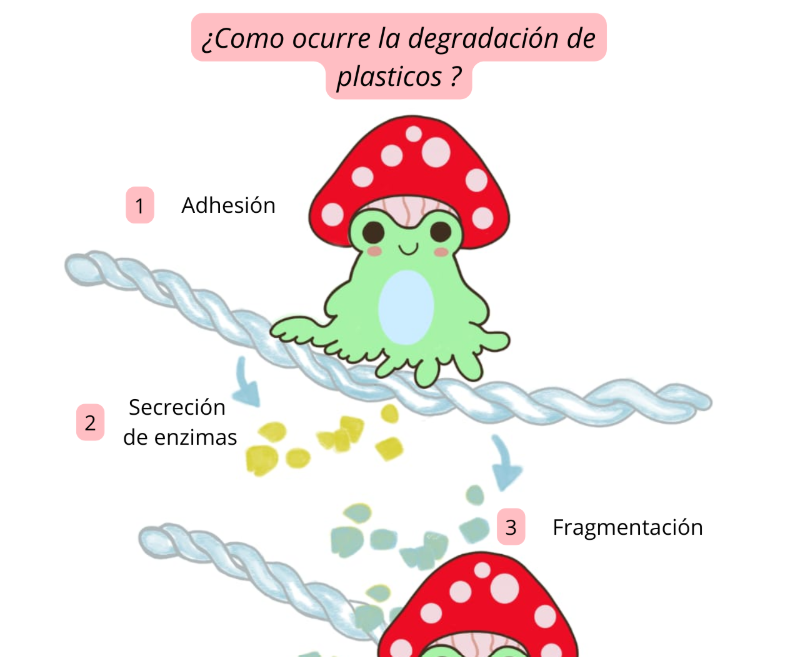

Microorganismos degradadores de plástico
¿Quiénes son?, ¿cómo lo hacen?, ¿qué dice la literatura científica? Un análisis desde la microbiología ambiental y la biotecnología.
Leer artículo completo →

Mi nombre es Mayerlin Lemos, microbióloga e ilustradora científica. Este espacio está dedicado a la divulgación de la ciencia desde una mirada crítica, ilustrada y consciente.

¿Quiénes son?, ¿cómo lo hacen?, ¿qué dice la literatura científica? Un análisis desde la microbiología ambiental y la biotecnología.
Leer artículo completo →
Un recorrido por las comunidades microbianas que viven en nuestro cabello, su importancia para la salud y el equilibrio del cuero cabelludo.
Leer artículo completo →
Cartilla educativa ilustrada sobre el papel de las microalgas en la resistencia antimicrobiana, dirigida a estudiantes y público general.
📥 Descargar cartillaUna reflexión personal sobre cómo la ilustración científica se convirtió en parte fundamental de mi proceso como microbióloga.
Leer más →Una mirada científica, estética y ética sobre el valor de las microalgas en la educación y la divulgación.
Leer más →